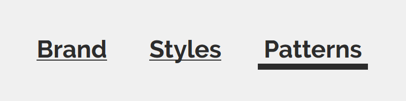

Buttons #
Technically, buttons are a box area where users can click or tap. In most cases, they are call-to-action. They manifest within three states: active, hover and disable.
Guidelines
- This section is in progress.
Links #
A link is a navigational element. It should be brief and descriptive of the intended destination.
Guidelines
- Provide text rather than images, so the content reminds readable. The only exception is the use of logos.
- Use text links in favour of buttons for navigation purposes. If it takes you to a new page or section of a page, it should be an anchor element
<a>. The only exception is the use of logos, as in the case of social media. - Keep the content below four words to prevent text wrapping.
- Use meaningful text that gives users an idea of where it's taking them. Avoid the use of vague sentences like Click here.
- Set a contrast between body text and background colour that complies with standards. Anyone should be able to read it.
- Always underline active links. Reinforce them in the hover state with a cursor pointer and hiding the underlining.
- Set the font size in relative units to keep it proportional to the reading device.
Code snippets
Links inside a paragraph
These are inline-block elements, and their code is the foundation for all the later ones.
This link is an example.
HTML
<p><a href="#">This link</a> is an example.</p>
CSS
a:link, a:visited {
background-color: #fcdad4;
color: #2f2f2f;
display: inline-block;
padding: 0 0.25rem;
transition: all 0.4s ease-in;
}
a:hover, a:visited:hover, a:focus {
background-color: #fba798;
text-decoration: none;
}
Links outside a paragraph
These are a call-to-action that usually appears at the end of a section.
HTML
<p><a class="cta" href="#">Another link as example</a></p>
CSS
.cta:link, .cta:visited {
font-family: 'Raleway', sans-serif;
font-size: 1.266rem;
margin: 2.281rem 0 1.125rem 0;
padding: 0.5rem;
}
Links in the main navigation bar
Except for the background colour, these links are like the ones outside a paragraph. A thicker underline identifies the current page.
Whenever possible, keep under four the total items in the main navigation bar. It may be viable, given the simplicity of my interfaces. It also reduces the need for a hamburger menu.

HTML
<nav>
<ul>
<li><a href="index.html" >Brand</a></li>
<li><a href="styles.html">Styles</a></li>
<li><a class="current" href="patterns.html">Patterns</a></li>
</ul>
</nav>
CSS
nav a:link, nav a:visited {
background-color: transparent;
font-family: 'Raleway', sans-serif;
font-weight: 700;
line-height: 1.2;
}
nav a:hover, nav a:focus, nav a:visited:hover {
text-decoration: none;
}
nav li {
display: inline-block;
padding: 0.5rem;
margin: 0;
}
nav ul {
display: inline;
}
nav a.current {
border-bottom: 0.25rem solid #2f2f2f;
border-radius: 0;
cursor: default;
text-decoration: none;
}
Image links in the main navigation bar
The logo should take the visitor to the main website's homepage. It appears in two shades: black and dark accent. The latter is for the hover and focus states.
HTML
<nav>
<a aria-label="Go back to Pati Montero's website" class="logo" href="../index.html">
<div class="container">
<svg xmlns="http://www.w3.org/2000/svg" version="1.1" viewbox="0 0 50 50">
<path d="M22.6 27.6c0 3.1 2.6 1.7 2.6 1.7V25c0-.1-2.6-.3-2.6 2.6zM11.2 20.9c-1 0-2 .6-2 .6v6.3c0 1 .7 2.8 2.3 2.8 1.5 0 2.4-2 2.4-5.4s-1.8-4.3-2.7-4.3z"/>
<path d="M25 0C11.2 0 0 11.2 0 25s11.2 25 25 25 25-11.2 25-25S38.8 0 25 0zM12.1 31.6c-1.6 0-2.4-.3-2.4-.3h-.5v6h-4V21.9c0-1-.4-1.8-1-1.8l-.1-.3 5.2-1.6h-.1v2h.4s1.6-2.1 4.1-2.1 4.6 2.8 4.6 6.1c.1 3.4-1.2 7.4-6.2 7.4zm29.7-.2c-1.5 0-2.3-.7-2.8-1.8-.5.5-2.2 1.8-4.2 1.8-1.3 0-2.2-.6-2.7-1.4-.4.4-1.8 1.4-3.3 1.4-2.2 0-2.7-1.6-2.7-1.6s-1.2 1.6-3.7 1.6c-2 0-3.6-1.5-3.6-3.3 0-4.5 6.5-3.9 6.5-3.9V21c0-1.2-.3-1.8-1.4-1.8-1.1 0-1.4.8-1.4.8s.7.4.7 1.4c0 1.5-1.2 1.9-1.8 1.9-.8 0-1.9-.3-1.9-1.9 0-3.2 5-2.9 5-2.9 5.1 0 4.8 3.3 4.8 4v5.9c0 2.1 1.8 1.4 2.2 1.1-.2-.6-.2-1.2-.2-1.9V17.3h-1v-.5c1 0 3.7-3.5 3.7-4.5h1.3v4c1-.8 2.4-3.6 5-3.6 1.3 0 2.6 1.1 2.6 2.4 0 1.3-1 2.4-2.3 2.4-1.2 0-2.6-1-2.6-2.1-.8 0-1.6 1.7-2.6 2.2v10c0 2 2.2 2.3 3.1 1.5-.1-.4-.1-.9-.1-1.4V22c0-.6 0-1.5-1-1.5v-.4l4.6-1.5.4.1v8.9c0 2.1 2.3 2.4 3.1 1.5l.3.3c-.1-.1-1.7 2-4 2z"/>
</svg>
</div>
</a>
</nav>
CSS
.logo:link, .logo:visited {
background: none;
display: inline-block;
fill: #2f2f2f;
margin: 0.5rem 1rem 0.5rem 0;
vertical-align: middle;
width: 3rem;
}
.logo:hover, .logo:focus, .logo:visited:hover {
fill: #dd2808;
}
Texts #
Along with my illustration and design pieces, this is the core of everything I publish on the web. It must be legible at all times.